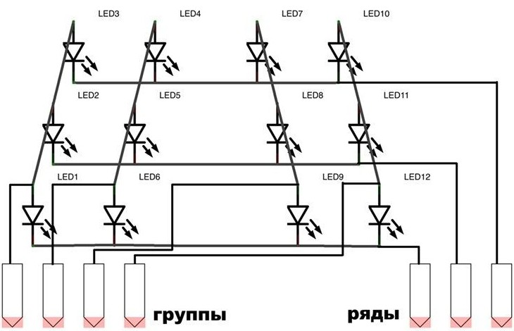
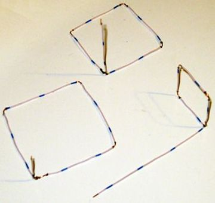
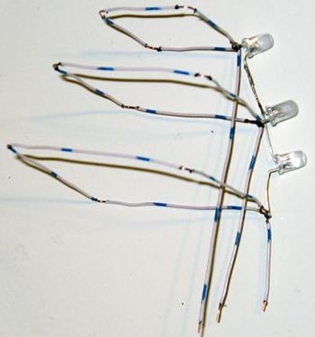
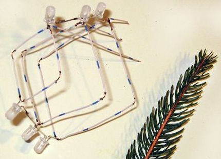
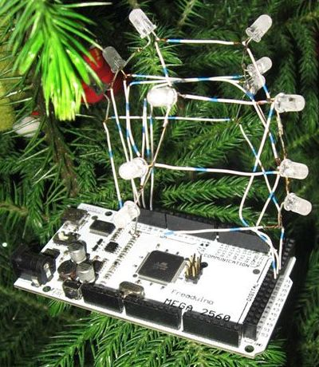
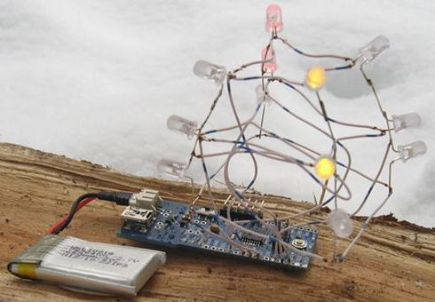

Светодиодная гирлянда на Arduino
Материалы:
- Светодиоды 12 шт (3 каждого цвета)
- Arduino
- Провод одножильный (для каркаса)
- Паяльник
Схема
Объединены светодиоды в четыре группы, каждая из трёх с общим анодом. Ряды пойдут на цифровые выводы Arduino, а группы на аналоговые выводы (можно также использовать цифровые).

Схема гирлянды
Сборка
Сначала нужно обработать светодиоды наждачной бумагой, для того чтобы они немного рассеивали свет и не били в глаза.
Сама сборка начинается с пайки отдельных рядов и их формирования. У нижнего ряда сторона равняется примерно 60 мм, среднего 50 мм, и верхний вышел около 30 мм. Так выглядят три ряда по отдельности:

Теперь напаивается первая цепь светодиодов, формируя конструкцию.

Далее припаивается вторая цепь светодиодов. Аналогичным образом припаиваем остальные цепи на каркас.

Скетч
#include#define SPEED_DELAY 200 #define LEDS 4 #define ROWS 3 #define MAX_LEVEL 64 int ledPins[] = {10, 11, 9, 3}; int rowPins[] = {5, 6, 7}; #define SCRIPT_STEPS 12+13+7+8 prog_uchar script[] PROGMEM = { B1000, B1000, B1000, B0100, B0100, B0100, B0010, B0010, B0010, B0001, B0001, B0001, B1000, B1000, B1000, B0100, B0100, B0100, B0010, B0010, B0010, B0001, B0001, B0001, B1000, B1000, B1000, B0100, B0100, B0100, B0010, B0010, B0010, B0001, B0001, B0001, B1111, B0000, B0000, B0000, B1111, B0000, B0000, B0000, B1111, B0000, B1111, B1111, B1111, B1111, B1111, B1111, B1111, B0000, B1111, B0000, B0000, B0000, B1111, B0000, B0000, B0000, B1111, B0000, B1111, B1111, B1111, B1111, B1111, B1111, B1111, B0000, B1111, B0000, B0000, /* B0000, B1111, B0000, B1111, B0000, B0000, B0000, B1111, B0000, B0000, B0000, B1111, B0000, B1111, B0000, B1111, B0000, B0000, B0000, B1111, B0000, B0000, B0000, B1111, */ B1000, B1000, B1000, B1100, B1100, B1100, B1110, B1110, B1110, B1111, B1111, B1111, B0111, B0111, B0111, B0011, B0011, B0011, B0001, B0001, B0001, B1001, B1001, B1001, B1100, B1100, B1100, B0110, B0110, B0110, B0011, B0011, B0011, B1001, B1001, B1001, B1100, B1100, B1100, B0110, B0110, B0110, B0011, B0011, B0011, }; void setup() { for (byte ii=0; ii<LEDS; ii++) { pinMode(ledPins[ii], OUTPUT); analogWrite(ledPins[ii], 0); } for (byte ii=0; ii<ROWS; ii++) { pinMode(rowPins[ii], OUTPUT); digitalWrite(rowPins[ii], HIGH); } } int scriptIdx = 0; int scriptStep = 0; int scriptStepInc = 1; void wire_test() { // All LEDs are on to test your soldering skills for (byte ii=0; ii<LEDS; ii++) { pinMode(ledPins[ii], OUTPUT); analogWrite(ledPins[ii], MAX_LEVEL); } for (byte ii=0; ii<ROWS; ii++) { pinMode(rowPins[ii], OUTPUT); digitalWrite(rowPins[ii], LOW); } } void loop() { unsigned char leds[ROWS]; memcpy_P(leds, script + scriptIdx, ROWS); unsigned long newTime = millis() + SPEED_DELAY; while (millis() < newTime) { for (byte ii=0; ii<ROWS; ii++) { for (byte ik=0; ik<LEDS; ik++) { analogWrite(ledPins[ik], ((leds[ii]>>ik) & 1) ? MAX_LEVEL : 0); } digitalWrite(rowPins[ii], LOW); delay(5); digitalWrite(rowPins[ii], HIGH); } } scriptStep += scriptStepInc; if ((scriptStep >= SCRIPT_STEPS) || (scriptStep <= 0)) { scriptStepInc = -scriptStepInc; scriptStep += scriptStepInc; } scriptIdx += scriptStepInc * ROWS; }
Результат

Гирлянда на Arduino Mega

Гирлянда на Arduino Fio с Lipo-аккумулятором